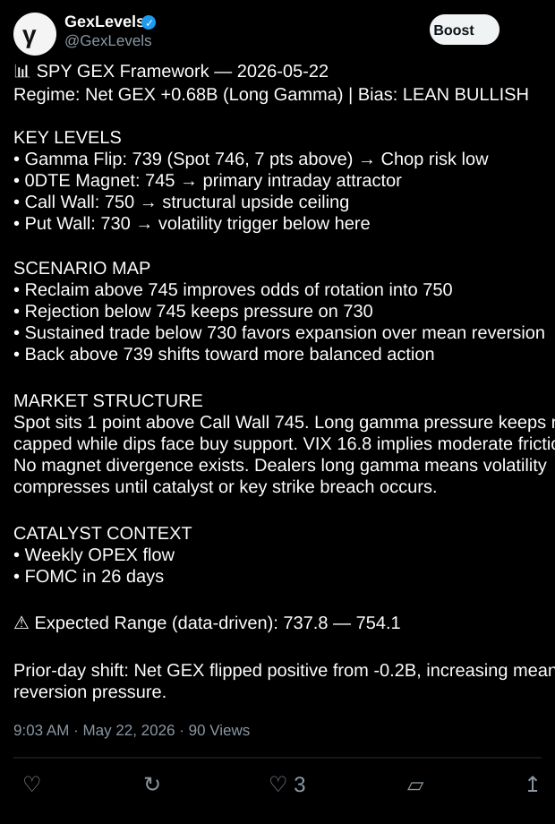
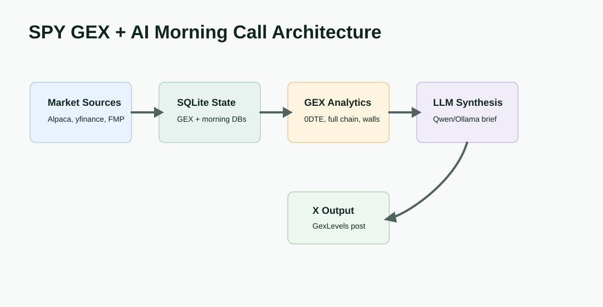
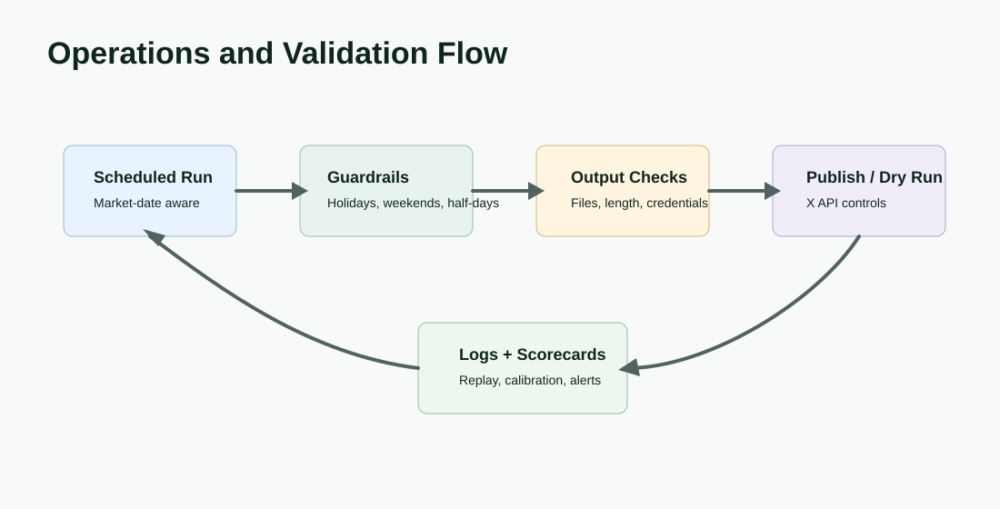

Product Surface


Problem
Useful market commentary needs more than an LLM prompt. It needs repeatable data capture, computed market structure, calendar context, headline context, and a publishing gate so generated language is downstream of reviewable inputs.
Solution
The CalculateGamma workflow fetches SPY options, SPY and VIX OHLC data, computes full-chain and 0DTE gamma exposure, persists daily state in SQLite, and exports analyst artifacts. AI Morning Call adds macro, futures, ETF, economic-calendar, and FinancialJuice/X headline context before model synthesis and optional posting.
Workflow

Design Decisions
Analytics Before Language
Gamma levels, VIX context, ATR ranges, and prior-day shifts are computed before model text is generated.
SQLite Replayability
Daily market state, briefs, generated tweets, predictions, and outcomes are persisted so runs can be reviewed later.
Publishing Separation
The post step validates credentials, content file, and length separately from data collection and brief generation.
Model Accountability
A multi-model morning-call path supports scorecards, thresholded consensus, and outcome logging instead of one-off prompt output.
Operations And Reliability
The repositories include a market-day aware daily runner, ET timezone handling, generated CSV/Pine/text outputs, optional X API posting, dry-run controls, retention behavior, and hooks for failure alerting. The GexLevels link is presented as the public output surface for the generated market brief.